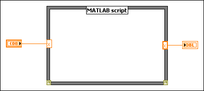
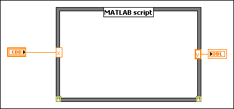

This error occurs when an input and output share the same name but have different data types. When you create an output with the same name as an existing input or vice versa, LabVIEW automatically changes the data type of the output (or input) to match the data type of the input (or output). If you then manually change the data type of either the input or the output, LabVIEW returns this error.
To correct this error, make sure that the input and output that share the same name also have the same data type. You can change the data types to match, or you can change the name of either the input or the output.
